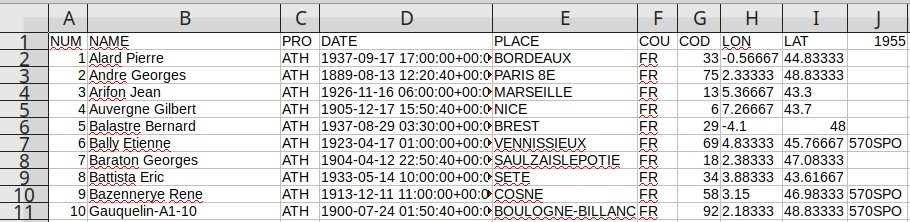

2-cura-csv.
The first thing to do is to copy the files that need to be marked in
3-cura-marked.
For example :
cp data/2-cura-csv/A1.csv data/3-cura-marked/The human edition will be done on file
data/3-cura-marked/A1.csv
Edition
In the edited file, a new column "1955" is added.
In this column a human fills the group codes.
Group codes are listed in file
share/groups-1955.csv ; they are also in constant GROUPS_1955 of class src/Serie1955.php.
The human edition consists in looking in the original lists, and for each record, put the group code in column 1955.
The edition looks like that :  This step only concerns identification of the records. Restoration of the original data will be done in next step.